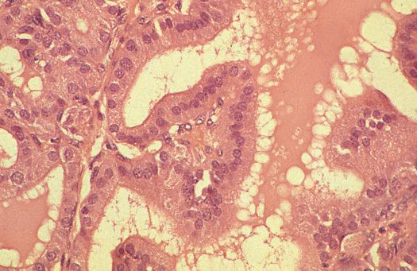
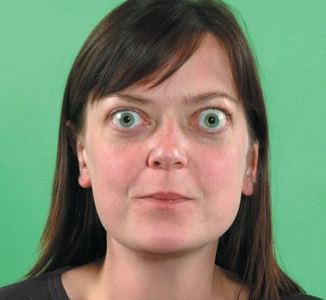
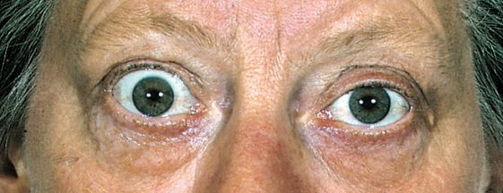
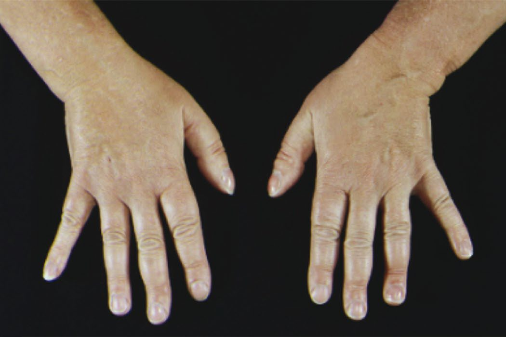

Graves' Disease and Hyperthyroidism
Summary
- Hyperthyroidism is a clinical state of excess thyroid hormone action; Graves' disease, an autoimmune disorder in which TSH-receptor antibodies stimulate the thyroid, is its commonest cause, followed by toxic multinodular goitre (Plummer's disease) and solitary toxic adenoma [1][2][3].
- The worldwide prevalence of hyperthyroidism is approximately 2.5%, with Graves' disease incidence around 30 per 100,000 persons per year, an 8:1 female-to-male ratio, and typical presentation between 20 and 40 years of age [1].
- Management options are antithyroid drugs, radioactive iodine and thyroidectomy, each with situation-specific indications; the three commonest causes are all conditions in which thyroidectomy plays an important, if not primary, role [1][4].
- UK management of thyrotoxicosis is set out in NICE NG145, which covers the tests that separate thyrotoxicosis with hyperthyroidism from thyrotoxicosis without it, the first-line definitive treatment for Graves' disease and toxic nodular goitre in adults and in children, and the monitoring schedules after each treatment [5].
- The most important divergence from the textbook account is the order of treatment: NICE offers radioactive iodine as first-line definitive treatment for adults with Graves' disease, with antithyroid drugs positioned as a choice only where remission is likely, or where radioiodine and surgery are unsuitable [5].
- This is set out in full under Treatment and Management below.
Definition
- Thyrotoxicosis is retained as a term because hyperthyroidism (symptoms from raised circulating thyroid hormone) does not account for all manifestations of the disease; clinical types are diffuse toxic goitre (Graves' disease), toxic nodular goitre, toxic nodule, and rarer causes [4].
- Hyperthyroidism is defined as a clinical state of elevated thyroid hormone action in tissues, usually because of inappropriately high constitutive secretion of thyroid hormone from the thyroid, divided into overt (suppressed TSH with elevated free T4 or T3) and subclinical (suppressed TSH with normal free T4 and T3) [1].
- Graves' disease is an autoimmune disease characterised by constitutive activation of the TSH receptor by TSH-receptor antibodies (TRAb), producing increased thyroid hormone synthesis and secretion [1].
Browse's draws the distinction that makes the classification usable: thyrotoxicosis is the clinical syndrome resulting from exposure to elevated circulating levels of thyroid hormones, while hyperthyroidism refers specifically to thyrotoxicosis arising from overproduction of thyroid hormones by thyroid follicular cells [6]. That matters because a substantial minority of thyrotoxic patients are not overproducing at all, they are releasing preformed hormone from a destroyed gland, and neither antithyroid drugs nor radioiodine will help them.
Causes of thyrotoxicosis
| Mechanism | Cause | Proportion |
|---|---|---|
| Overproduction | Graves' disease | 70% |
| Overproduction | Toxic multinodular goitre | 20% |
| Overproduction | Toxic nodule | 5% |
| Overproduction | Iodine induced | Under 1% |
| Overproduction | TSH-secreting pituitary adenoma | Under 1% |
| Thyroid destruction | Subacute thyroiditis | 3% |
| Thyroid destruction | Silent thyroiditis | 3% |
| Thyroid destruction | Amiodarone induced (type 2) | Under 1% |
| Non-thyroidal | Factitious; struma ovarii; metastatic thyroid cancer | All very rare |
- Table reformats the causes of thyrotoxicosis with their relative frequencies [6].
- Ninety-five per cent are accounted for by the first three causes [6].
- Sabiston classifies the same list by a different and operationally more useful axis, radioiodine uptake.
- Normal or elevated uptake occurs in Graves' disease, toxic multinodular goitre, toxic adenoma, trophoblastic disease, TSH-producing pituitary adenoma and thyroid hormone resistance; no or minimal uptake occurs in painless thyroiditis, amiodarone-induced thyroiditis, subacute thyroiditis, iatrogenic thyrotoxicosis, struma ovarii, acute thyroiditis, follicular thyroid cancer metastases and palpation thyroiditis [1].
Pathophysiology
- In Graves' disease, the whole functioning thyroid is involved, and hypertrophy and hyperplasia are due to abnormal TSH-receptor antibodies binding TSH receptor sites, producing a disproportionate and prolonged effect; 55% of patients have a family history of autoimmune endocrine disease [4].
- Stimulatory antibodies to the TSH receptor are present in the sera of 90% of patients and cause unregulated overproduction of thyroid hormone [6].
- Because of its autoimmune aetiology, Graves' disease can produce extrathyroidal manifestations: Graves orbitopathy occurs in up to 25–30% of patients through autoimmune reactions in orbital and periorbital soft tissue causing proptosis, eyelid retraction, chemosis, periorbital oedema and diminished ocular motility, which if untreated can cause vision loss from corneal lesions or optic nerve compression.
- Skin manifestations include pretibial myxoedema and acropachy, which is oedema at the digits [1].
- Browse's lists four extrathyroidal manifestations: eye disease (ophthalmopathy), skin disease (pretibial myxoedema), acropachy (clubbing), and lymphoid hyperplasia [6].
- Associated autoimmune conditions include Hashimoto thyroiditis, lupus, rheumatoid arthritis, pernicious anaemia and Addison disease [1].
Why the symptoms are what they are
- T3 and T4 have three effects: they increase the metabolic rate of all cells, they increase the sensitivity of β-adrenergic receptors, and they stimulate all cells to grow, though the growth effect is only significant before natural growth has finished [6].
- Increased tissue metabolism therefore causes increased appetite, weight loss and increased heat production; increased adrenergic receptor sensitivity causes tachycardia, extrasystoles, atrial fibrillation, tremor, nervousness, lid retraction and lid lag; and growth stimulation in childhood produces early maturation and a slight increase in growth rate [6].
- In hypothyroidism all of these are reversed, and lack of growth stimulation in a child causes short stature and impaired mental development [6].
The eye signs
- Lid retraction and lag occur in any cause of thyrotoxicosis: sensitisation of sympathetic nerves carried via the third cranial nerve causes overactivity of the involuntary smooth-muscle part of levator palpebrae superioris [6].
- Exophthalmos, ophthalmoplegia and chemosis are the signs specific to Graves' disease, and are present in 30% of Graves' patients [6].
- Graves' ophthalmopathy is thought to result from an immune response to retro-orbital antigens similar to those in the thyroid, or from cross-reactivity of TRAb with TSH receptors present on fibroblasts and adipocytes in the retro-ocular tissues, with the resulting inflammation, oedema and fibrosis affecting retro-orbital tissue and ocular muscles.
- There is an association with smoking, in both frequency and severity of symptoms [6].
Each sign has a mechanism worth knowing. Lid retraction is present when the upper eyelid sits higher than normal (normally midway between the pupil and the superior limbus of the iris) with the lower lid in its correct position; lid lag is present when the upper lid does not keep pace with the eyeball as it follows a finger moving downwards [6]. Exophthalmos is a change in the relationship of the lids to the iris because the eyeball is pushed forwards by an increase in retro-orbital fat, oedema and cellular infiltration, so that sclera becomes visible below the inferior limbus. It makes convergence difficult and allows the patient to look up without raising the eyebrows or wrinkling the forehead, and severe cases can be complicated by corneal ulceration [6]. Ophthalmoplegia results from oedema and cellular infiltration of the ocular muscles, most often superior rectus and inferior oblique, which normally turn the eye up and out, so 'up and out' is the first movement to weaken [6]. Chemosis is oedema of the conjunctiva caused by obstruction of its venous and lymphatic drainage by increased retro-orbital pressure; the normal conjunctiva is smooth and invisible, so a thickened, crinkled, slightly opaque conjunctiva is easy to recognise [6]. Pretibial myxoedema is a violaceous, non-pitting induration of pretibial skin occurring in 1–5% of patients with Graves' disease, with skin biopsy showing mucin in the lower dermis and overlying hyperkeratosis [6].
Toxic nodular disease
- Toxic nodular goitre (Plummer's disease) results from autonomously functioning nodules arising from TSH-receptor gene mutations causing constitutive hormone synthesis, typically in a simple nodular goitre present long before hyperthyroidism develops (secondary thyrotoxicosis), usually in the middle-aged or elderly and rarely with eye signs [1][4].
- These 'warm' or 'hot' nodules are rarely malignant and typically do not require biopsy, but they can coexist with non-functioning nodules in the same gland which must be evaluated independently [1].
- A toxic solitary nodule is autonomous and not driven by TRAb; TSH is suppressed by high circulating hormone, and the surrounding normal thyroid tissue is itself suppressed and inactive [4].
- A toxic adenoma affects females at a median age of 50 to 60 years with a mild female predominance, and the main theory of its pathogenesis is constitutively activating TSH-receptor gene mutations, although the prevalence of these mutations is not universal and varies widely by geography [1].
- Histologically, hyperthyroidism shows hyperplasia of acini lined by high columnar epithelium, many empty, others with vacuolated colloid showing a characteristic 'scalloped' pattern [4].

Amiodarone-induced thyrotoxicosis
- Amiodarone is an iodine-rich compound structurally similar to T4, containing 37% iodine by molecular weight; a normal dosing schedule delivers over 100 times the daily dietary iodine requirement, and amiodarone-induced thyrotoxicosis occurs in up to 6% of patients taking it [1].
- Two distinct mechanisms exist. Type 1 is caused by the Jod-Basedow phenomenon, in which the high iodine load potentiates excess thyroid hormone synthesis and release, and is more common in patients with pre-existing hyperthyroid disease. Type 2 usually occurs in patients with no pre-existing thyroid disease and is a destructive thyroiditis from direct drug toxicity on follicular cells, releasing preformed hormone.
- Mixed forms occur [1].
Clinical features
- Multisystem manifestations include neurological (tremor, anxiety, restlessness, emotional lability, insomnia), gastrointestinal (diarrhoea, increased appetite, weight loss), cardiac (palpitations, sinus tachycardia or atrial fibrillation, dyspnoea, chest pain), dermatological (thin hair, pretibial myxoedema or acropachy, erythema), reproductive (menstrual irregularity, reduced libido), goitre (diffuse or nodular, bruit), and constitutional features (heat intolerance, muscle weakness) [3].
- Uncontrolled hyperthyroidism can rarely cause severe cardiovascular complications including cardiomyopathy and congestive heart failure that can progress to cardiovascular collapse and death [1].
- Symptoms found only in Graves' disease include exophthalmos and pretibial oedema [2].
- Browse's organises the history by system, and notes that neurological symptoms such as nervousness, irritability, insomnia, depression and excitement may be noticed by family long before the patient is aware of them [6].
- Metabolic symptoms are increased appetite with weight loss or absence of weight gain, feeling hot with a preference for cold weather and dislike of warm, and excessive sweating; cardiovascular symptoms are palpitations, exertional breathlessness, ankle swelling and chest pain; alimentary symptoms are a change of bowel habit, usually diarrhoea; genital tract symptoms are oligomenorrhoea or amenorrhoea; and musculoskeletal symptoms include proximal myopathy with wasting and weakness of the small muscles of hand, shoulder and face in addition to generalised weight loss [6].
- Hyperaesthesia, headaches, vertigo, and tremors of the hands and tongue may occur, and a thyrotoxic psychosis may be present [6].
Examination
- Feel the pulse: tachycardia suggests thyrotoxicosis, bradycardia hypothyroidism, and thyrotoxicosis may cause atrial fibrillation, which may be the only sign in elderly patients [6].
- Are the palms moist and sweaty? Test for tremor by asking the patient to hold the arms out in front with elbows and wrists straight and fingers straight and separated.
- Thyrotoxicosis causes a fine, fast tremor, and if in doubt hold out your own hand beside the patient's for comparison, or accentuate it by placing a sheet of paper over the fingers [6].
- A similar tremor may be present in the protruded tongue [6].
- Tachycardia is usually over 90 beats per minute, and the pulse is irregular if there are extrasystoles or atrial fibrillation; with mild heart failure there may be basal crackles and ankle oedema [6].
- In the neck, the gland is usually enlarged, but hyperthyroidism can be present without significant enlargement; the enlargement may be diffuse, nodular or tender depending on the pathology, and a diffusely enlarged hyperaemic gland usually has a systolic bruit audible over its lateral lobes [6].
- Patients with thyrotoxicosis show generalised weight loss, especially about the face, sometimes with localised wasting of hands, face and shoulder muscles; they may look hot and be sweating even in a cold room, and they look worried and nervous and move in an agitated, jerky way [6].
- Distended neck veins from thoracic-inlet obstruction may show Pemberton's sign, facial redness on raising both arms above the head [6].
- Rarely, patients present with life-threatening thyrotoxic crisis, 'thyroid storm', precipitated by a variety of triggers [3].



Distinguishing the three common causes at the bedside
| Feature | Graves' disease | Toxic multinodular goitre | Toxic adenoma |
|---|---|---|---|
| Typical age | Peak 20–40 years | Over 45 years; commonest cause of hyperthyroidism over 60 | Any age; median 50–60 years |
| Sex ratio | Ten times more common in females | Approximately 5:1 female to male | Mild female predominance |
| Gland | Diffusely enlarged, often with systolic bruit | Nodular, often large | Single nodule in an otherwise normal or nontoxic gland |
| Eye signs | Exophthalmos, ophthalmoplegia and chemosis in 30% | Lid lag and lid retraction only, with marked thyrotoxicosis | Lid lag and lid retraction only |
| Autoantibodies | TRAb present in 90% | Negative | Negative |
Table reformats the distinguishing features of the three commonest causes of thyrotoxicosis [1][6].
Etiology
- Graves' disease is caused by IgG antibodies to the TSH receptor (long-acting thyroid stimulator, thyroid-stimulating immunoglobulin) and is the most common cause of hyperthyroidism, at about 75–80% [1][2].
- Toxic multinodular goitre is the second most common cause in the United States and the most common cause among the elderly and in iodine-deficient regions, with a 5:1 female-to-male ratio, typically affecting adults over 50 [1].
- A single toxic nodule occurs more often in younger women and needs to be over 3 cm to become symptomatic, functioning autonomously; 20% of hot nodules eventually cause symptoms [2].
- Long-standing multinodular goitres can develop secondary thyrotoxicosis in the elderly, sometimes triggered by administration of iodine-containing contrast in medical imaging [6].
- Rarer causes include drug-induced thyrotoxicosis (amiodarone, lithium, tyrosine kinase inhibitors, antiretrovirals), TSH-secreting pituitary adenoma, β-HCG-mediated hyperthyroidism (gestational, hydatidiform mole), thyroid cancer, subacute and postpartum thyroiditis from release of preformed hormone, and factitious ingestion of excess thyroid hormone [2][3].
- Trophoblastic tumours and TSH-secreting pituitary tumours are rare causes [2].
Diagnosis
- Initial evaluation includes history and examination for thyrotoxicosis-related comorbidities and biochemical tests: TSH with free T4 and T3, TRAb for Graves' disease, and TPO antibodies for Hashitoxicosis [3].
- The 2016 ATA guidelines for hyperthyroidism recommend initial evaluation of thyrotoxicosis with TRAb measurement, radioactive iodine uptake, or thyroidal blood flow on ultrasonography; Graves-related thyrotoxicosis shows elevated TRAb, elevated iodine uptake and/or elevated thyroidal blood flow [1].
- TRAb is present in up to 90% of Graves' disease patients and is diagnostic when positive [1].
- Sonographic features of Graves' disease include a diffusely hypervascular gland, often with heterogeneous echogenicity, and thyroid nodular disease may also be identified.
- Nuclear scintigraphy with technetium-99m pertechnetate or iodine-123 helps differentiate TSI-negative Graves' disease from toxic nodular disease on the basis of a diffuse rather than nodular uptake pattern, and cross-sectional imaging of the head may be useful for evaluating orbitopathy [1].
- Diagnosis of Graves' disease in a thyrotoxic patient with goitre is supported by low TSH, high T3/T4, LATS level, and diffuse iodine-123 uptake on thyroid scan [2].
- For toxic multinodular goitre, thyroid function tests are mandatory, a survey of thyroid antibodies including TRAb is necessary to identify coexisting autoimmune thyroiditis and rule out Graves' disease, nuclear scintigraphy is the first-line imaging study and identifies the location and distribution of autonomously functioning nodules, and ultrasound is highly recommended as a correlative study to assess overall thyroid size and characterise any non-functioning nodules that may require biopsy [1].
- Toxic adenoma shares most of the diagnostic approach of toxic multinodular goitre; the ATA guidelines in fact combine the two groups in their treatment recommendations [1].
- Changes in hormone activity can be assessed by clinical examination, by measuring TSH, free T3 and T4, and by measuring the rate, quantity and pattern of uptake of radio-labelled technetium or iodine [6].
NG145 narrows the diagnostic pathway considerably compared with the ATA approach quoted above, and the narrowing is deliberate.
For adults, differentiate thyrotoxicosis with hyperthyroidism (Graves' disease, toxic nodular disease) from thyrotoxicosis without hyperthyroidism (for example transient thyroiditis) by measuring TSH receptor antibodies to confirm Graves' disease, and considering technetium scanning of the thyroid gland only if TRAbs are negative [5]. For children and young people, measure both TPOAbs and TRAbs, again considering technetium scanning only if TRAbs are negative [5].
- Ultrasound is not part of the thyrotoxicosis pathway.
- Only consider ultrasound for adults with thyrotoxicosis if they have a palpable thyroid nodule [5].
- For children and young people it is offered only if there is a palpable nodule or the cause remains unclear after autoantibody testing and technetium scanning [5].
- Thyroidal blood flow on ultrasound, offered as an equivalent first-line option in the ATA scheme, has no place in the NICE pathway.
- The general testing rules that precede all of this are also worth knowing.
- Offer thyroid function tests to adults, children and young people with type 1 diabetes or other autoimmune disease, or new-onset atrial fibrillation [5].
- Do not test for thyroid dysfunction during an acute illness unless the acute illness is suspected to be due to thyroid dysfunction, because the illness may affect the results [5].
- Ask about biotin intake, because high consumption of biotin from dietary supplements may give falsely high or low test results [5].
- Consider measuring TSH alone in adults where secondary (pituitary) dysfunction is not suspected, then measure FT4 and FT3 in the same sample if the TSH is below the reference range, the practice NICE calls cascading [5].
Scoring and Severity
Hyperthyroidism severity is biochemically divided into overt disease (suppressed TSH with elevated free T4 or T3) and subclinical disease (suppressed TSH with normal free T4/T3), with subclinical disease generally milder in presentation, though both can cause clinically significant symptoms [1]. The 2016 ATA guidelines provide an evidence-based table of clinical situations favouring one modality over another for Graves' hyperthyroidism [1]:
| Clinical situation | Radioactive iodine | Antithyroid drug | Surgery |
|---|---|---|---|
| Pregnancy | Contraindicated | Preferred, cautious use | Acceptable, cautious use |
| Comorbidities with increased surgical risk or limited life expectancy | Preferred | Acceptable | Contraindicated |
| Active Graves ophthalmopathy | Cautious use | Preferred | Preferred |
| Inactive Graves ophthalmopathy | Acceptable | Acceptable | Acceptable |
| Liver disease | Preferred | Cautious use | Acceptable |
| Major adverse reactions to antithyroid drugs | Preferred | Contraindicated | Acceptable |
| Previously operated or externally irradiated neck | Preferred | Acceptable | Cautious use |
| Lack of access to a high-volume thyroid surgeon | Preferred | Acceptable | Cautious use |
| High likelihood of remission (female, mild disease, small goitre, negative or low-titre TRAb) | Acceptable | Preferred | Acceptable |
| Periodic paralysis | Preferred | Acceptable | Preferred |
| Right pulmonary hypertension or congestive heart failure | Preferred | Acceptable | Cautious use |
| Thyroid malignancy confirmed or suspected | Contraindicated | Not first-line | Preferred |
| One or more large thyroid nodules | Not first-line | Acceptable | Preferred |
| Coexisting primary hyperparathyroidism requiring surgery | Not first-line | Not first-line | Preferred |
Table reformats the 2016 ATA table of clinical situations favouring a particular modality for Graves' hyperthyroidism [1].
Browse's correlation table is the corresponding bedside tool, mapping the clinical state of the gland against its endocrine function to produce a differential diagnosis: a diffusely enlarged hyperthyroid gland is Graves' disease; multinodular enlargement with hyperthyroidism is toxic multinodular goitre (Plummer's syndrome); a solitary nodule with hyperthyroidism is an autonomous toxic nodule; and a hyperthyroid patient with no palpable goitre has either Graves' disease or thyroxine overdose [6].
Treatment and Management
- Non-specific measures such as rest and sedation are used only alongside specific treatment: antithyroid drugs, surgery and radioiodine [4].
- Antithyroid drugs (carbimazole, propylthiouracil) restore and maintain a euthyroid state in the hope of permanent remission but cannot cure a toxic nodule, where recurrence is certain on stopping; failure rate is at least 55%, with treatment duration tailored from 6 months in mild disease to 2 years in severe [4].
- Methimazole is the preferred antithyroid drug over propylthiouracil, except in pregnancy, because PTU was found to be more often associated with liver failure requiring transplantation; methimazole crosses the placenta and can cause cretinism in newborns, so PTU is used in pregnancy [1][2].
- Beta-blockers such as propranolol 40–120 mg/day control tachycardia and tremor and inhibit peripheral T4-to-T3 conversion [3][4].
- Hormone secretion can be suppressed pharmacologically in several ways: high-dose iodine transiently inhibits hormone release (the Wolff-Chaikoff effect); potassium perchlorate interferes with iodine trapping; and carbimazole and propylthiouracil inhibit the iodination of tyrosine and the coupling of tyrosines to make thyronines [6].
- Radioactive iodine reduces functioning thyroid mass below a critical level; it is contraindicated in active Graves ophthalmopathy, which it may worsen, in pregnancy because it is teratogenic, and around young children [3].
- In the US, radioiodine is the most commonly employed treatment for Graves' disease, though antithyroid medication is increasingly used first-line, with nearly one-third of patients achieving long-term remission on medication alone [1].
- Although radioiodine ablation is often billed as extremely low-risk or no-risk, emerging evidence suggests a higher rate of secondary malignancy than previously reported [1].
- Thyroidectomy is generally preferred for severe eye disease, failure or contraindication of other treatments, need or desire for rapid reversal of hyperthyroidism, coexisting suspicious nodules, large compressive goitres, and pregnancy or breastfeeding; although it is a first-line option, in practice it is often relegated to a secondary role because of perceived risks associated with general anaesthesia and surgery [1].
- Indications for surgery also include a non-compliant patient, recurrence after medical therapy, children, pregnant women uncontrolled on PTU, or a concomitant suspicious thyroid nodule, the last being the most common indication [2].
- Near-total or total thyroidectomy is preferred for Graves' disease when radioactive iodine is contraindicated, when the goitre is large (over 80 g) or airway obstruction appears imminent, or in patients with demonstrated poor compliance with or tolerance of antithyroid medication [8].
Treatment differences in toxic nodular disease
- The same three options apply to toxic multinodular goitre but with three differences [1].
- First, antithyroid medication is generally not advocated as a long-term strategy except where the other two are absolutely contraindicated, such as in elderly, ill or frail patients with limited life expectancy, because the disease is not autoimmune and autonomous nodules do not undergo remission with medical therapy.
- Second, radioiodine is the most common definitive treatment in the US, but the dose is typically higher (and by extension so are the risk of treatment failure and the need for retreatment) because iodine uptake is lower than in Graves' disease.
- Third, SSKI and Lugol's solution are not indicated for toxic multinodular goitre as they are for Graves' disease, because the high iodine concentration may not produce a temporary euthyroid state by the Wolff-Chaikoff effect and instead induces hyperthyroidism through the Jod-Basedow phenomenon [1].
- For a solitary toxic adenoma the philosophy is the same: antithyroid drugs are not effective for long-term remission and either radioiodine or thyroidectomy is preferred for definitive treatment [1].
- Toxic nodular goitre is often large and enlarges further with antithyroid drugs, so large goitres are treated surgically as they respond less well to radioiodine or antithyroid drugs than diffuse toxic goitre does [4].
Thermal ablation has shown variable resolution of hyperthyroidism for toxic adenomas compared with surgery or radioiodine, so radiofrequency ablation is not recommended as first-line treatment for large toxic adenomas, though it can be considered in young patients with small ones. Nodules under 12 mL in volume with volume reduction exceeding 80% are more likely to see resolution of hyperthyroidism [1].
Medical treatment of amiodarone-induced thyrotoxicosis typically consists of methimazole, with corticosteroids added to address the thyroiditis in type 2 disease; the decision to stop amiodarone must be made individually with the treating cardiologist to ensure continuity of adequate antiarrhythmic therapy in these often high-risk patients [1]. Total thyroidectomy is recommended for patients unresponsive to aggressive medical therapy, and although thyroidectomy carries more risk in this setting than in most other indications, with perioperative mortality of 9% to 10%, delaying surgery carries an even higher risk of mortality [1].
Preoperative preparation
- Carbimazole 30–40 mg/day is given until euthyroid, taking 8–12 weeks, then reduced or converted to a 'block and replace' regimen of carbimazole plus 0.1–0.15 mg thyroxine daily.
- Alternatively β-adrenergic blockade can achieve clinical euthyroidism within days, but must be continued for 7 days post-operatively because hormone levels remain high.
- Iodine as Lugol's solution may be added for 10 days pre-operatively to reduce vascularity via the Wolff–Chaikoff effect [2][4].
- Sabiston notes that patients should ideally be rendered euthyroid before thyroidectomy with antithyroid medication, but that recent studies suggest the risk of thyroid storm during thyroidectomy in actively thyrotoxic patients is minimal [1].
- High-concentration potassium iodide solutions can be given for 7 to 10 days before surgery and are thought to decrease thyroid blood flow and gland vascularity while helping to achieve a euthyroid state rapidly, though their use may not be helpful or needed in selected situations.
- Cholestyramine or lithium can be repurposed to decrease circulating free thyroid hormone levels, and preoperative optimisation of calcium and vitamin D status, including calcitriol supplementation, has been shown to decrease the postoperative risk of transient hypocalcaemia [1].
Thyroid storm
- Thyroid storm is a rare state of life-threatening physiological decompensation in patients with severe uncontrolled hyperthyroidism, often after an inciting stressor; symptoms are dramatic and severe, and include fever, cardiac effects (hypertension, tachycardia, arrhythmia, congestive heart failure), mental status changes (agitation, stupor, coma), and hepatic failure [1].
- Treatment is multimodal, β-blockade, antithyroid medication, potassium iodide, corticosteroids, mechanical cooling and intensive supportive care, with plasmapheresis reported to reduce circulating hormone rapidly and worth considering in severe cases, though limited by cost and availability [1].
- Beta-blockers are the first drug given; Lugol's solution or potassium iodide is most effective through the Wolff–Chaikoff effect but slow to act; cooling blankets, oxygen and glucose are added; high-output cardiac failure is the most common cause of death, and emergent thyroidectomy is rarely indicated [2].
The order of treatment is where NICE and the textbooks part company. In the account above, antithyroid drugs are the usual starting point and radioiodine the fallback. NG145 inverts this for adults with Graves' disease.
- Offer radioactive iodine as first-line definitive treatment for adults with Graves' disease, unless antithyroid drugs are likely to achieve remission, or radioiodine is unsuitable, for example where there are concerns about compression, malignancy is suspected, the patient is pregnant or trying to become pregnant or father a child within the next 4 to 6 months, or there is active thyroid eye disease [5].
- Offer a choice of a 12- to 18-month course of antithyroid drugs or radioiodine as first-line definitive treatment if antithyroid drugs are likely to achieve remission, for example in mild and uncomplicated Graves' disease [5].
- Offer a 12- to 18-month course of antithyroid drugs as first-line definitive treatment only if radioiodine and surgery are unsuitable [5].
Offer total thyroidectomy as first-line definitive treatment for adults with Graves' disease if there are concerns about compression, or thyroid malignancy is suspected, or radioiodine and antithyroid drugs are unsuitable [5]. Where antithyroid drugs have been given but hyperthyroidism persists or relapses, consider radioiodine or surgery [5].
- For toxic nodular goitre the same logic applies.
- Offer radioiodine as first-line definitive treatment for hyperthyroidism secondary to multiple nodules unless it is unsuitable [5]; if radioiodine is unsuitable, offer total thyroidectomy or life-long antithyroid drugs [5].
- For hyperthyroidism secondary to a single nodule, offer radioiodine if suitable, or surgery in the form of hemithyroidectomy, or life-long antithyroid drugs if neither is suitable [5].
- Children and young people are managed the opposite way round.
- Offer antithyroid drugs for at least 2 years and possibly longer as first-line definitive treatment for children and young people with Graves' disease; if they relapse after a course, consider continuing or restarting antithyroid drugs or discussing radioiodine or total thyroidectomy [5].
- For hyperthyroidism secondary to single or multiple nodules in children, offer antithyroid drugs using a titration regimen of carbimazole and discuss the role of surgery and radioiodine with the child, young person and family following multidisciplinary input [5].
- Antithyroid drug rules.
- Before starting antithyroid drugs in anyone, check full blood count and liver function tests [5].
- When offering antithyroid drugs as first-line definitive treatment to an adult with Graves' disease, offer carbimazole for 12 to 18 months, using either a block-and-replace or a titration regimen, then review the need for further treatment [5].
- For children and young people, offer carbimazole using a titration regimen and review the need for treatment every 2 years [5].
- For life-long antithyroid drugs in an adult with single or multiple toxic nodules, consider a titration regimen of carbimazole [5].
- Consider propylthiouracil for adults who experience adverse reactions to carbimazole, who are pregnant or trying to become pregnant within the following 6 months, or who have a history of pancreatitis [5]. Stop and do not restart any antithyroid drug if a person develops agranulocytosis, and consider referral to a specialist for further management options [5].
- Antithyroid drugs with supportive treatment should also be offered to control hyperthyroidism in anyone waiting for radioiodine or surgery [5], and considered for adults with hyperthyroidism waiting for specialist assessment in primary or non-specialist care [5].
Transient thyrotoxicosis without hyperthyroidism usually needs only supportive treatment, for example beta-blockers [5], which is why separating the two at diagnosis matters.
- Monitoring after treatment.
- After radioiodine, consider measuring TSH, FT4 and FT3 every 6 weeks for the first 6 months until TSH is within the reference range; offer levothyroxine to those who become hypothyroid and are not on antithyroid drugs; for those with TSH in range at 6 months, consider measuring TSH with cascading at 9 and 12 months, then every 6 months [5].
- If hyperthyroidism persists after radioiodine, consider antithyroid drugs until the 6-month appointment, and if it persists at 6 months, consider further treatment [5].
- After total thyroidectomy, offer levothyroxine; after hemithyroidectomy, consider measuring TSH and FT4 at 2 and 6 months and then TSH once a year [5].
- On antithyroid drugs, consider measuring TSH, FT4 and FT3 every 6 weeks until TSH is in range, then TSH every 3 months until the drugs are stopped [5]. Do not monitor full blood count and liver function in people taking antithyroid drugs unless there is a clinical suspicion of agranulocytosis or liver dysfunction [5], a direct instruction against routine surveillance bloods, and one that sits alongside the requirement to check both before starting.
- Subclinical hyperthyroidism.
- Consider seeking specialist advice for adults with two TSH readings below 0.1 mIU/litre at least 3 months apart plus evidence of thyroid disease such as a goitre or positive antibodies, or symptoms of thyrotoxicosis; seek specialist advice in all children and young people with subclinical hyperthyroidism [5].
- For untreated subclinical hyperthyroidism, consider measuring TSH every 6 months in adults and TSH, FT4 and FT3 every 3 months in children, stopping measurement if the TSH stabilises with two similar in-range measurements 3 to 6 months apart [5].
What to tell the patient. NG145 specifies the content of the discussion: the different causes of thyrotoxicosis; the consequences of leaving it untreated; the suitability of each option, noting that antithyroid drugs may be more suitable for mild uncomplicated Graves' disease, surgery may be best for an enlarged thyroid causing compression, and radioiodine is not usually suitable before puberty; the advantages, that antithyroid drugs and radioiodine are non-invasive and that surgery offers rapid relief with no need to delay pregnancy or fathering a child; the disadvantages, that antithyroid drugs have side effects, that radioiodine means limited contact with other people for a few weeks and a need to delay pregnancy, and that surgery is invasive and leaves a neck scar; the effect of each option on new and existing thyroid eye disease, noting that radioiodine may precipitate or worsen thyroid eye disease; and the need for thyroid hormone replacement if treatment causes life-long hypothyroidism [5].
Surgeries
- For diffuse toxic goitre and toxic nodular goitre with overactive internodular tissue, surgery cures by reducing thyroid mass below a critical level.
- Subtotal thyroidectomy returns the patient to euthyroid, after a variable hypothyroid period, but carries long-term recurrence and failure risk, whereas total or near-total thyroidectomy accepts immediate thyroid failure and lifelong thyroxine in exchange for eliminating recurrence risk and simplifying follow-up [4].
- Near-total or total thyroidectomy is associated with a nearly 0% risk of recurrent hyperthyroidism, against 5–10% recurrence after subtotal thyroidectomy from residual tissue, and is now generally preferred [1].
- Recurrence of thyrotoxicosis occurs in at least 5% of subtotal thyroidectomies, and there is a risk of permanent hypoparathyroidism and nerve injury [4].
- Near-total or total thyroidectomy is now preferred over subtotal thyroidectomy because of the lower recurrence rate, and surgery is preferred over radioactive iodine in childbearing women who wish to conceive in the near future, in non-compliant patients, and where airway obstruction appears likely [8].
Rates of permanent RLN injury (0–2%), permanent hypoparathyroidism (0.6–6%) and neck haematoma (0.3–0.7%) after total thyroidectomy in Graves' disease are higher than for other indications but remain low, especially with high-volume surgeons, and there is no difference in complication rates between total/near-total and subtotal thyroidectomy groups, which removes the last argument for accepting the recurrence risk of a subtotal resection [1]. The risk of complications from remedial repeat thyroidectomy is up to tenfold higher than initial surgery, which further underscores why subtotal thyroidectomy is no longer favoured [1].
- For an autonomous toxic nodule, or a toxic nodular goitre with overactive autonomous nodules, surgery cures by removing the overactive tissue and allowing the suppressed normal tissue to recover function; resection is easy and certain with limited morbidity [4].
- Thyroidectomy for a toxic adenoma is typically limited to unilateral lobectomy addressing the side of the adenoma, a strategy associated with near-universal cure of the hyperthyroidism; near-total or total thyroidectomy is indicated only where there are other factors, such as bilateral nodules with suspicion of cancer or a large or symptomatic goitre [1].
- Hemithyroidectomy may be considered for unilateral toxic nodules [3].
- Near-total or total thyroidectomy is likewise the generally recommended surgical treatment of toxic multinodular goitre, since complete extirpation carries a similarly low complication rate to subtotal thyroidectomy while virtually eliminating recurrence [1].
- The surgical technique for thyroidectomy involves a transverse cervical incision, subplatysmal flap elevation, division between strap muscles, identification of the RLN (often but not always posterior to the inferior thyroid artery, in about 70% of cases) and preservation of parathyroid blood supply, careful management of Berry's ligament, and delivery and division of the gland.
- Intraoperative nerve monitoring is increasingly used, particularly in reoperative cases [4].
- Full operative detail is set out on the Thyroid Nodules and Goitre page.
- UK practice has settled decisively on total thyroidectomy for thyrotoxicosis.
- In the 2016–2020 UKRETS dataset, 87% of first-time operations for thyrotoxicosis were total thyroidectomies, similar to the 86% in the Fifth Audit Report; lobectomy accounted for 9%, up from 7%, and bilateral subtotal thyroidectomy for 2%, down from 4% in the 2010–2015 data [9].
- Restricting the analysis to hyperthyroid patients whose primary pathology was thyrotoxicosis, 94.3% underwent total thyroidectomy, with lobectomy in 1.9%, bilateral subtotal thyroidectomy in 1.9% and lobectomy plus subtotal thyroidectomy in 1.3% [9].
- Subtotal thyroidectomy has, in other words, essentially disappeared from UK practice for this indication, which is what the recurrence and complication data above predict.
Redo operations for thyrotoxicosis are now few, and the majority of them (74%) are lobectomies [9].
Complications
- Post-thyroidectomy stridor requires emergency wound opening and haematoma evacuation to prevent airway compromise; it can also result from bilateral RLN injury, requiring emergency tracheostomy [2].
- Permanent hypoparathyroidism and RLN injury are recognised risks of surgery for thyrotoxicosis, particularly after subtotal resection or reoperation [4].
- Graves' disease is an independent risk factor for postoperative hypoparathyroidism and for neck haematoma, and is one of the situations in which prophylactic preoperative calcitriol is given [1].
- Young women tend to have a poorer cosmetic result from the surgical scar [4].
- Thyroid storm itself is a life-threatening complication of undiagnosed or inadequately treated Graves' disease, most commonly precipitated by surgery, and carries risk of high-output cardiac failure and death if untreated [2][3].
- Radioiodine treatment risks include worsening of Graves' eye signs, quarantine requirements, avoidance of pregnancy and close contact with children afterwards, and a rate of secondary malignancy that emerging evidence suggests is higher than previously reported [1][3].
The UK registry quantifies the excess risk of operating on a Graves' gland, and separates the transient from the permanent component in a way the textbook ranges do not.
| Pathology at total thyroidectomy | Early post-operative hypocalcaemia | Late hypocalcaemia (calcium supplements at 6 months) |
|---|---|---|
| Graves' disease | 20.5% (95% CI 19.1–21.9%) | 5.3% (95% CI 4.6–6.2%) |
| Papillary thyroid cancer | 19.2% (95% CI 17.6–21.0%) | 9.1% (95% CI 7.9–10.4%) |
| Colloid goitre | 15.6% (95% CI 14.1–17.1%) | 4.1% (95% CI 3.3–5.0%) |
| All total thyroidectomies | 18.3% (95% CI 17.5–19.0%) | 6.0% (95% CI 5.5–6.5%) |
- Table reformats UK registry rates of post-operative and late hypocalcaemia after first-time total thyroidectomy, by pathology [9].
- Graves' disease has the highest early hypocalcaemia rate of any pathology at 21%, but roughly three-quarters of those patients recover, leaving 5% with late hypocalcaemia, a pattern the registry attributes to hungry bone syndrome or temporary impairment of parathyroid function rather than gland loss.
- Papillary thyroid cancer is the reverse: a slightly lower early rate, but hypocalcaemia resolves in just under half, giving the highest late rate at 9%, presumably from excision or devascularisation of the parathyroids during cancer surgery [9].
- The consent conversation for a Graves' thyroidectomy and for a cancer thyroidectomy therefore carries the same early number and very different long-term ones.
Prognosis
- Medical therapy for Graves' disease has a reported success rate of about 95% in managing hyperthyroidism, though recurrence after antithyroid drugs is around 50% and after radioiodine around 5% [2].
- Nearly one-third of patients may achieve long-term remission with antithyroid medication alone [1].
- It is unusual to need to operate on Graves' disease patients; a suspicious nodule is the most common reason for surgery [2].
- With suitable preoperative preparation and an experienced surgeon, operative mortality for thyrotoxicosis surgery is negligible and morbidity low [4].
- Untreated or unrecognised thyroid storm carries a high mortality rate, principally from high-output cardiac failure [2][3].
- Amiodarone-induced thyrotoxicosis is the exception to the generally excellent surgical outcomes: thyroidectomy in that setting carries a perioperative mortality of 9% to 10%, though delaying surgery in an unresponsive patient carries a higher risk still [1].
References
- Sabiston Textbook of Surgery, 22nd ed., Ch. 73, Table 73.1
- The ABSITE Review, 2022, Thyroid chapter
- Oxford Handbook of Clinical Surgery, 5th ed., Ch. 7
- Bailey & Love's Short Practice of Surgery, 28th ed., Ch. 55
- NICE Guideline NG145: Thyroid disease — assessment and management (2019, last updated October 2023), 1.1.5; 1.2.2; 1.2.6; 1.2.8; 1.2.11; 1.6.1; 1.6.2; 1.6.3; 1.6.4; 1.6.5; 1.6.6; 1.6.9; 1.6.10; 1.6.11; 1.6.12; 1.6.13; 1.6.14; 1.6.15; 1.6.16; 1.6.17; 1.6.18; 1.6.19; 1.6.20; 1.6.21; 1.6.22; 1.6.23; 1.6.24; 1.6.25; 1.6.26; 1.7.1; 1.7.2; 1.7.3; 1.7.4; 1.7.5; 1.7.6; 1.7.7; 1.7.8; 1.7.9; 1.7.10; 1.8.1; 1.8.2; 1.8.3; 1.8.4; 1.8.5 www.nice.org.uk
- Browse's Introduction to the Symptoms and Signs of Surgical Disease, 6th ed., Ch. 12, Table 12.1
- Bailey & Love's Short Practice of Surgery, 28th ed., Ch. 49
- Schwartz's Principles of Surgery: ABSITE and Board Review, Ch. 38 Thyroid, Parathyroid, and Adrenal
- British Association of Endocrine and Thyroid Surgeons: Sixth National Audit Report 2021, United Kingdom Registry of Endocrine and Thyroid Surgery (UKRETS), data 2016–2020, Hyperthyroidism and operation; Hypocalcaemia and pathology; Thyrotoxicosis: operation performed www.e-dendrite.com